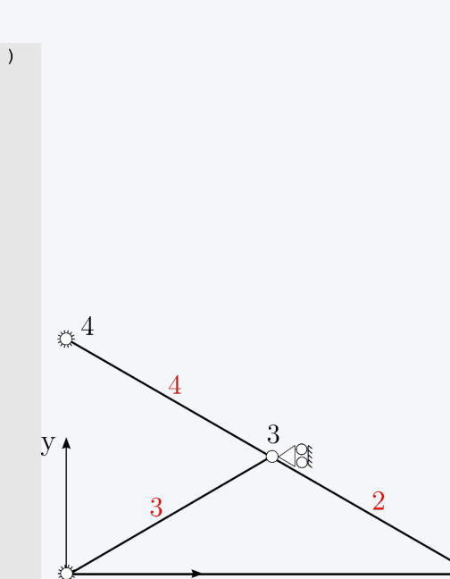
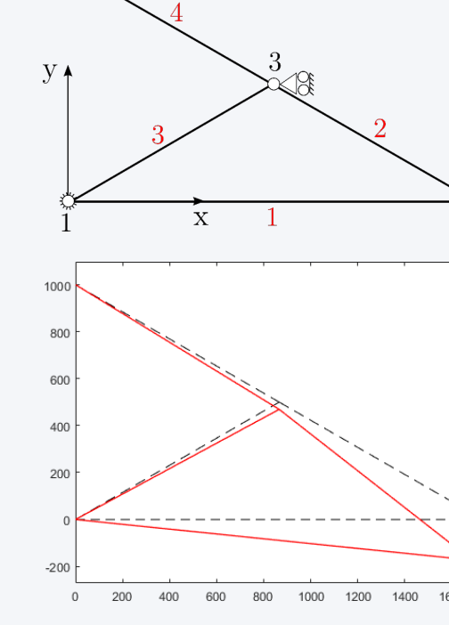
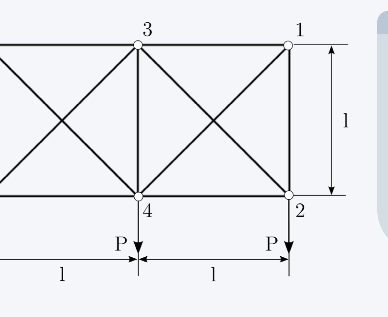

The structure of the program is very simple, and consists of three distinct steps: the preparation of data (pre-process), the analysis of the structure (solution) and the recovery of those quantities to be used during the analysis of results (post-processing). The three steps are accomplished by the three functions input_model, analyze_structure and plot_deformed_shape.
% --- 1. Pre-process
INPUT = input_model;
% --- 2. Solution
[ ELEMENTS, NODES, MODEL ] = analyze_structure( INPUT );
% --- 3. Post-process: recovery of forces, plot deformed shapes, ...
ELEMENTS = force_recovery( MODEL, ELEMENTS );
Overview of the Program – Structures
Three main functions are used throughout the program: MODEL, NODES, ELEMENTS. The fields of the structures are here illustrated.
MODEL Structure
ndof: 8tot number of dofs for the unconstr systemnels: 4total number of elementsnnodes: 4total number of nodesK: [3×3 double]stiffness matrix of constr structureF: [3×1 double]load vector of constr structureconstr_dofs: [1 2 7 8 5]position of constrained dofsfree_dofs: [3 4 6]position of free dofsnfree_dofs: 3number of free dofsK_unc: [8×8 double]stiffness matrix of unconstr structureF_unc: [8×1 double]load vector of unconstr structU: [3×1 double]displacement vector (only free dofs)U_unc: [8×1 double]displacement vector (all dofs)
NODES Structure
coord_xnode x coordinatecoord_ynode y coordinatendofnumber of nodal dofs (2 for 'truss', 6 for 'beams')
ELEMENTS Structure
nodesID of nodes composing the elementEAaxial stiffnessEJbending stiffnesstype'truss' or 'beam'dofsnumber of element dofs (4: truss; 6: beams)ptrsvector of pointersK_el_locelement stiffness matrix (local system)K_elelement stiffness matrix (global system)lelement lengthalphaelement angleTelement transformation matrixnodal_forceselement nodal forces
Step 1, Pre-process: input_model
The input file is written from the user by specifying the characteristics of the model to be analyzed. The data are organized into the structure INPUT, which is divided into different fields.
elements: [4×3 double][ID_nodeA, ID_nodeB, ID_prop]nodes: [4×3 double][ID x y]section_prop: [115200000 0][EA EJ]load: [2 2 -10000][ID_node direction magnitude]spc: [5×2 double][ID_node dof]
The function analyze_structure represents the core of the program, and is divided into a number of functions.
function [ ELEMENTS, NODES, MODEL ] = analyze_structure( INPUT )
% --- Set model
[ ELEMENTS, NODES, MODEL ] = set_model( INPUT );
% --- Set pointers
ELEMENTS = set_pointers( ELEMENTS, NODES, MODEL.nels );
% --- Build element stiffness matrices
ELEMENTS = element_stiffness( ELEMENTS, NODES, MODEL.nels );
% --- Assembly stiffness matrix
MODEL = assembly_stiffness( ELEMENTS, MODEL );
% --- Impose constraints and solve
MODEL = solve_structure( MODEL );
set_model
Organize data in a form which is suitable from the solution of the problem. INPUT data are transferred into the structures ELEMENTS, NODES, MODEL.
function [ ELEMENTS, NODES, MODEL ] = set_model( INPUT )
For example, the fields for element 3 and node 3 are:
The function writes the pointers associated with the generic i-th element in the field ELEMENT(i).ptrs
ELEMENTS = set_pointers( ELEMENTS, NODES, MODEL.nels )
>> ELEMENTS(1).ptrs
ans =
1 2 3 4
>> ELEMENTS(2).ptrs
ans =
5 6 3 4
>> ELEMENTS(3).ptrs
ans =
1 2 5 6
>> ELEMENTS(4).ptrs
ans =
7 8 5 6

Pointer assignments for each element
element_stiffness (1/3)
function ELEMENTS = element_stiffness( ELEMENTS, NODES, n_els )
for i = 1 : n_els Loop over the elements
el_nodes = ELEMENTS(i).nodes;
% Determine element length
lx = NODES(el_nodes(2)).coord_x - NODES(el_nodes(1)).coord_x;
ly = NODES(el_nodes(2)).coord_y - NODES(el_nodes(1)).coord_y;
l = sqrt( lx^2 + ly^2 ); Element length
c = lx / l; % cos( alpha )
s = ly / l; % sin( alpha )
% Build local stiffness matrix
if strcmp( ELEMENTS(i).type, 'truss')
% Transformation matrix
T = [c s 0 0; 0 0 c s];
% Properties and stiffness matrix
EA = ELEMENTS(i).EA;
ELEMENTS(i).K_el_loc = EA/l*[1 -1; -1 1]; Stiffness matrix in local coord
element_stiffness (2/3)
elseif strcmp( ELEMENTS(i).type, 'beam')
% Transformation matrix
T_node = [c s 0; -s c 0; 0 0 1];
T = [T_node zeros(3,3); zeros(3,3) T_node];
% Properties and stiffness matrix
EA = ELEMENTS(i).EA;
EJ = ELEMENTS(i).EJ;
K_aa = [ EA/l 0 0;
0 12*EJ/l^3 6*EJ/l^2;
0 6*EJ/l^2 4*EJ/l];
K_ab = [-EA/l 0 0;
0 -12*EJ/l^3 6*EJ/l^2;
0 -6*EJ/l^2 2*EJ/l];
K_bb = [EA/l 0 0;
0 12*EJ/l^3 -6*EJ/l^2;
0 -6*EJ/l^2 4*EJ/l];
ELEMENTS(i).K_el_loc = [K_aa K_ab; K_ab' K_bb]; Stiffness matrix in local coord
end
element_stiffness (3/3)
% Rotate stiffness matrix
ELEMENTS(i).K_el = T' * ELEMENTS(i).K_el_loc * T; Stiffness matrix in global coord
% Store some useful values
ELEMENTS(i).l = l;
ELEMENTS(i).alpha = atan2(s,c)*180/pi;
ELEMENTS(i).T = T;
end
assembly_stiffness
The assembly of the stiffness matrix is readily performed by using the vectors of pointers to directly set the contribution of each element in the correct position of the global stiffness matrix.
function MODEL = assembly_stiffness( ELEMENTS, MODEL )
% --- Assembly stiffness matrix
for i = 1 : MODEL.nels
ptrs = ELEMENTS( i ).ptrs;
K_el = ELEMENTS( i ).K_el;
MODEL.K( ptrs, ptrs ) = MODEL.K( ptrs, ptrs ) + K_el;
end
solve_structure
function MODEL = solve_structure( MODEL )
constr_dofs = MODEL.constr_dofs;
% Store unconstrained K and F
MODEL.K_unc = MODEL.K;
MODEL.F_unc = MODEL.F;
% Impose constraints
MODEL.K( constr_dofs, : ) = []; Remove rows of constrained dofs
MODEL.K( :, constr_dofs ) = []; Remove cols of constrained dofs
MODEL.F( constr_dofs ) = []; Remove rows of constrained dofs
% Solve problem
MODEL.U = MODEL.K \ MODEL.F;
% Expand displacements to the global vector
MODEL.U_unc = zeros( MODEL.ndof, 1);
MODEL.U_unc( MODEL.free_dofs ) = MODEL.U;
Results
Here below the stiffness matrix, the load vector and the displacement for comparison purposes:
>> MODEL.U displacements of unconstrained dofs
ans =
-0.2604
-0.9719
-0.1736
Step 3, Post-process: force_recovery
function ELEMENTS = force_recovery( MODEL, ELEMENTS )
% --- Force recovery
for i = 1 : MODEL.nels
T = ELEMENTS(i).T;
ptrs = ELEMENTS(i).ptrs;
U_el_loc = T * MODEL.U_unc( ptrs ); Displacements of the element in local coordinates
nodal_forces = ELEMENTS(i).K_el_loc * U_el_loc;
%(take force in node 2: >0 in traction)
ELEMENTS(i).nodal_forces = nodal_forces(2);
end
Results
ELEMENTS.nodal_forces
ans =
-1.7321e+04 axial force in element 1 (<0: compression)
2.0000e+04
-1.0000e+04
1.0000e+04 axial force in element 4 (>0: traction)
MODEL.U_unc
ans =
0
0
-0.2604
-0.9719
0
-0.1736
0
0

Deformed shape of 4-element truss
Exercises
Complete the program by writing the missing parts of the code
Extend to program to include the possibility of performing free-vibration analyses
Solve the problems reported in the next slides and check the correctness of the implementation
Exercise 1 – 10 Truss Structure
Evaluate the deformed shape and the free vibrations of the structure in the figure.

10-element truss structure
Input Data
\(l = 360 \text{ mm}\)
\(P = 100 \text{ N}\)
\(E = 1\text{e}4 \text{ MPa}\)
\(m = 1\text{e-}4 \text{ t}\) (lumped mass at each node)
Square section of dimension \(a = \sqrt{10} \text{ mm}\)
Deformed Configuration
Solution of the linear static problem: \(\mathbf{KU} = \mathbf{f}\)
Note: The nodal displacements are very similar. Neglecting the bending stiffness does not affect the quality of the predictions as the response is axially-dominated.
Exercise 2 – 15 Truss Structure
Evaluate the deformed shape and the free vibrations of the structure in the figure.